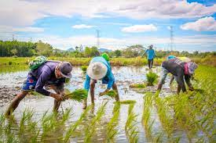
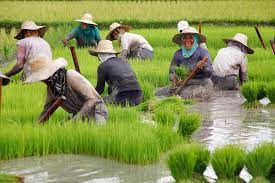

"Farmers Are At The Heart Of Everything We Do"
What is PPSA?
PPSA was established in 2015 by the Philippines' Department of Agriculture to help address the pressing issues in agriculture by providing a platform for various stakeholders to engage, discuss, collaborate and bring to life initiatives and best practices of individual companies into a collective action aimed at improving the lives of smallholder farmers.
The PPSA was catalyzed by Grow Asia to bring together different sectors and actors to co-develop and scale initiatives to address key issues in agriculture.
What We Have Done So Far
The Philippines Partnership for Sustainable Agriculture (PPSA) has been actively involved in numerous Projects that aims to help farmers.
Agri-food innovation: seeks to accelerate the adoption of climate-smart innovations and digital solutions across Southeast Asia.
Responsible Investing: which encourage adoption of the ASEAN Guidelines on Promoting Responsible Investment in Food, Agriculture, and Forestry for more responsible agricultural investment practices in Southeast Asia.
Climate Resilience: support the development of a center of excellence to consolidate research and deploy training at scale to strengthen climate change adaptation and resilience.
Women's Empowerment: amplify the business case for women’s economic empowerment and incentivizes public and private investment into gender-inclusive and transformative actions, practices, and policies.

